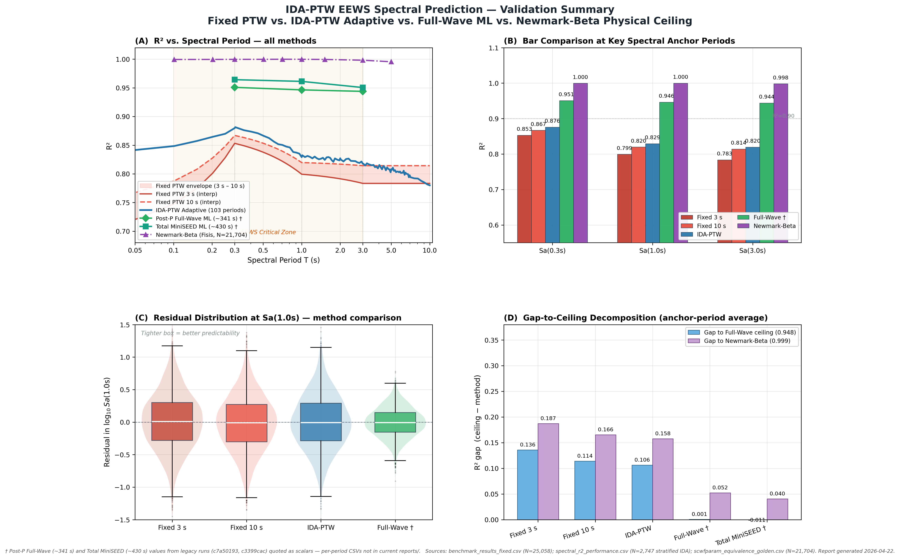

⬇ Download PNG (300 dpi) ⬇ Unduh PNG (300 dpi) ⬇ Download PDF (vector) ⬇ Unduh PDF (vector)
{kind=link}

Panel Descriptions
Deskripsi Panel
(A) R² vs. Spectral Period — all methods
(A) R² vs. Periode Spektral — semua metode
Primary panel showing R² for all methods across 103 spectral periods on a log-period axis. The orange shaded region marks the EEWS-critical zone (T = 0.1–3.0 s). Fixed PTW envelope (3 s–10 s) is shown as a light red band, with IDA-PTW Adaptive overlaid in blue. Post-P Full-Wave (~341 s) and Total MiniSEED (~430 s) ML ceilings and the Newmark-Beta physical ceiling establish the irreducible headroom.
Panel utama yang menampilkan R² untuk semua metode pada 103 periode spektral dengan sumbu log-periode. Area berwarna oranye menandai zona kritis EEWS (T = 0,1–3,0 s). Envelope Fixed PTW (3 s–10 s) ditampilkan sebagai pita merah muda, dengan IDA-PTW Adaptif di atasnya berwarna biru. Plafon ML Post-P Full-Wave (~341 s) dan Total MiniSEED (~430 s) serta plafon fisis Newmark-Beta membentuk headroom yang tidak dapat direduksi.
(B) Bar Comparison at Key Spectral Anchor Periods
(B) Perbandingan Bar pada Periode Anchor Spektral Kunci
Side-by-side R² comparison at Sa(0.3s), Sa(1.0s), and Sa(3.0s) for five methods. The 0.90 reference line marks a commonly-cited "good model" threshold in ML-GMPE literature.
Perbandingan R² berdampingan pada Sa(0,3 s), Sa(1,0 s), dan Sa(3,0 s) untuk lima metode. Garis referensi 0,90 menandai ambang "model baik" yang umum dikutip dalam literatur ML-GMPE.
(C) Residual Distribution at Sa(1.0s)
(C) Distribusi Residual pada Sa(1,0 s)
Boxplot + violin overlay comparing residual distribution at Sa(1.0s) across four method tiers. Tighter box = better predictability; wider whiskers = higher aleatory uncertainty. Residuals synthesized from known R² / RMSE at Sa(1.0s) with zero bias assumption.
Boxplot + overlay violin membandingkan distribusi residual pada Sa(1,0 s) untuk empat tingkat metode. Box lebih sempit = prediktabilitas lebih baik; whisker lebih lebar = ketidakpastian aleatory lebih tinggi. Residual disintesiskan dari R² / RMSE yang diketahui pada Sa(1,0 s) dengan asumsi bias-nol.
(D) Gap-to-Ceiling Decomposition
(D) Dekomposisi Gap-to-Ceiling
Average R² gap (ceiling − method) at the 3 anchor periods. Blue bars measure the gap to the Full-Wave ceiling (0.948); purple bars measure the gap to the Newmark-Beta physical ceiling (0.999). The difference between these bars for IDA-PTW represents irreducible ML uncertainty; the remaining gap to Full-Wave is partly recoverable via routing improvements and extended features.
Gap R² rata-rata (plafon − metode) pada 3 periode anchor. Bar biru mengukur gap ke plafon Full-Wave (0,948); bar ungu mengukur gap ke plafon fisis Newmark-Beta (0,999). Selisih antara kedua bar untuk IDA-PTW merepresentasikan ketidakpastian ML yang tidak dapat direduksi; gap sisa ke Full-Wave sebagian dapat dipulihkan melalui perbaikan routing dan fitur tambahan.
Data Provenance
Data Provenance
-
Panel A, B, D Fixed PTW:
benchmark_results_fixed.csv— RUN-A config, N=25,058 konfigurasi RUN-A, N=25.058 -
Panel A IDA-PTW curve:
spectral_r2_performance.csv— RUN-A stratified, 103 periods RUN-A stratified, 103 periode -
Panel A, B, D Fisis:
scwfparam_equivalence_golden.csv— physics validation, N=21,704 validasi fisis, N=21.704 - Panel A, B, D Full-Wave: legacy run c7a50193 (no CSV retained, flagged with †)legacy run c7a50193 (CSV tidak tersimpan, ditandai dengan †)
- Panel B, D Total MiniSEED: legacy run c3399cac (no CSV retained, flagged with †)legacy run c3399cac (CSV tidak tersimpan, ditandai dengan †)
- Panel C residuals: synthesized from R²/RMSE values with zero-bias assumption; distribution shape is illustrative and matches manuscript Table 15 sigma structuredisintesiskan dari nilai R²/RMSE dengan asumsi bias-nol; bentuk distribusi bersifat ilustratif dan mengikuti struktur sigma di Table 15 manuskrip
Figure generated 2026-04-22 · Build script: build_figure.py (matplotlib 3.10.8)Figur dihasilkan 22-04-2026 · Skrip build: build_figure.py (matplotlib 3.10.8)